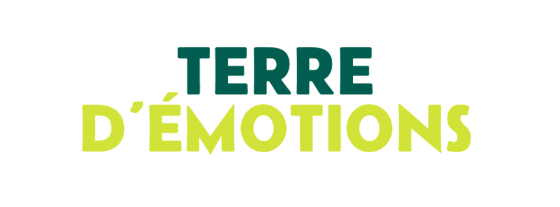
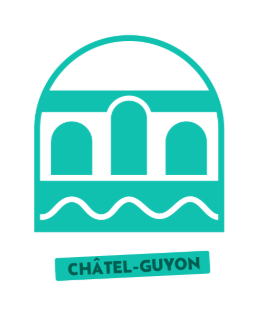
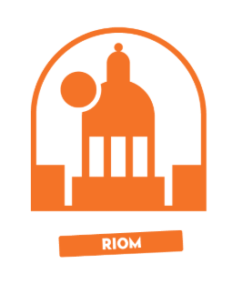

Motion Design — Terra Volcana
Dans le cadre d'un concours organisé entre les étudiants du BUT Métiers du Multimédia et de l'Internet (MMI), j'ai réalisé un projet de motion design autour des logos de Terra Volcana. L'objectif était de mettre en valeur l'identité visuelle de la marque à travers une animation dynamique et créative. Ce projet m'a permis de développer mes compétences en animation graphique et de proposer une interprétation personnelle de cette identité. Ma réalisation a été récompensée par le 3e prix du concours !
01. Identité Visuelle — Terra Volcana
Découverte et exploration des logos de Terra Volcana, qui constituent la base de mon travail d'animation.




02. Motion Design
Animation des logos de Terra Volcana : travail du mouvement, du rythme et des transitions afin de donner vie à l'identité visuelle.
Motion design — Vidéo 01
Motion design — Vidéo 02
Motion design — Vidéo 03
Motion design — Vidéo 04
03. Concours étudiant MMI
3e prix — Concours Terra Volcana
Ce projet a été réalisé dans le cadre d'un concours réunissant les étudiants MMI autour de la création graphique et du motion design. Mon travail d'animation des logos de Terra Volcana m'a permis de me démarquer et d'obtenir la troisième place. Une expérience valorisante qui témoigne de mon investissement, de ma créativité et de mon intérêt pour l'animation graphique.